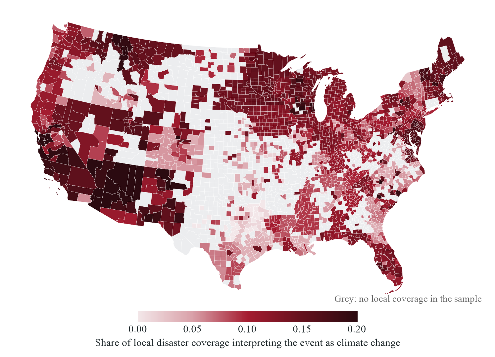
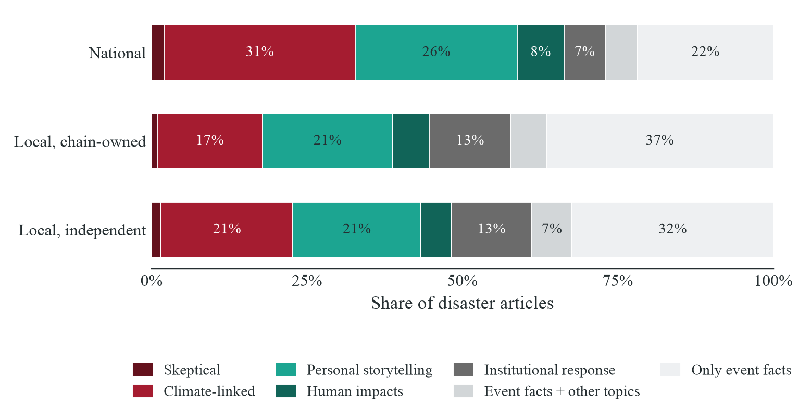
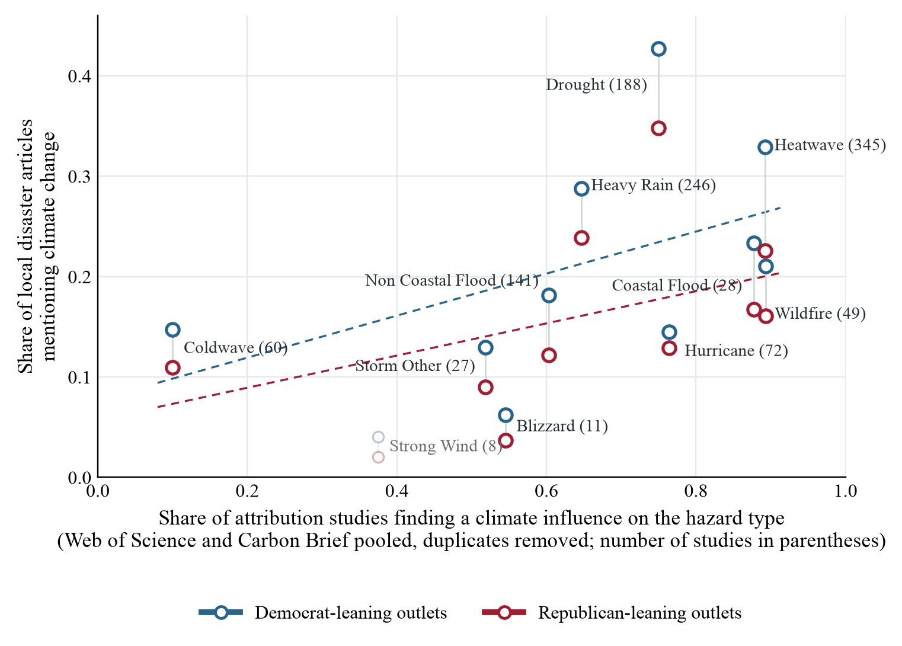
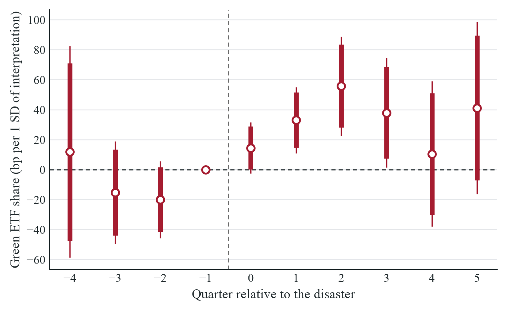
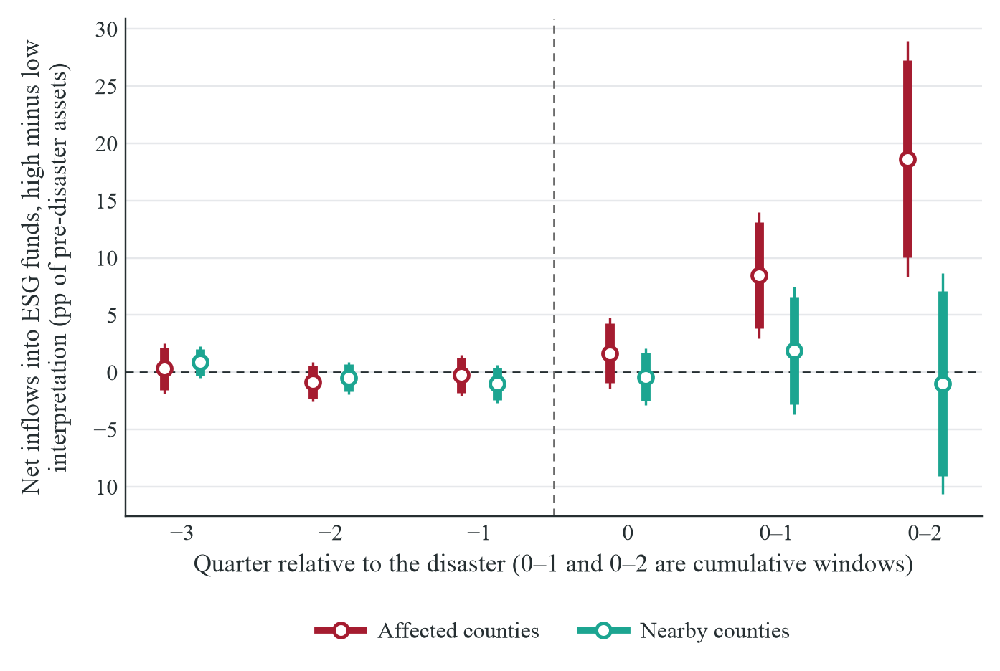
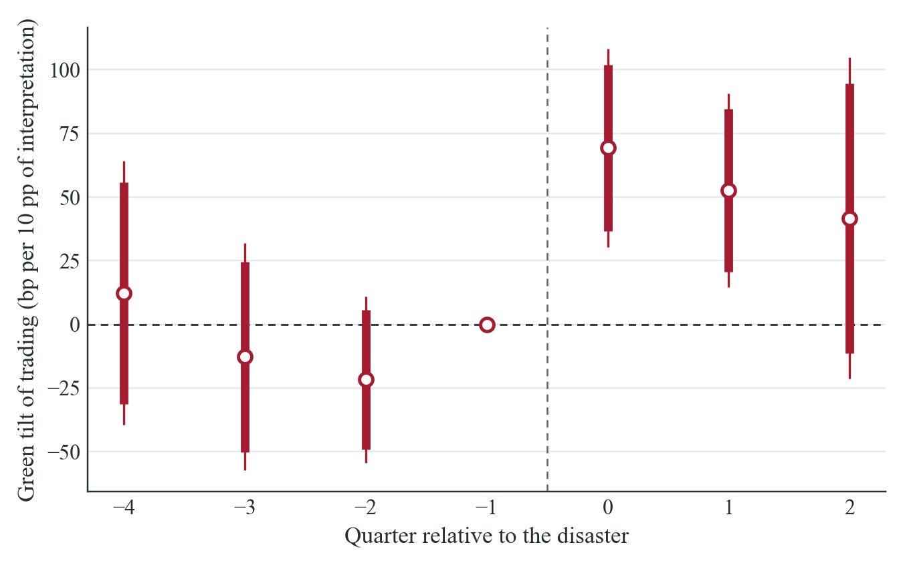
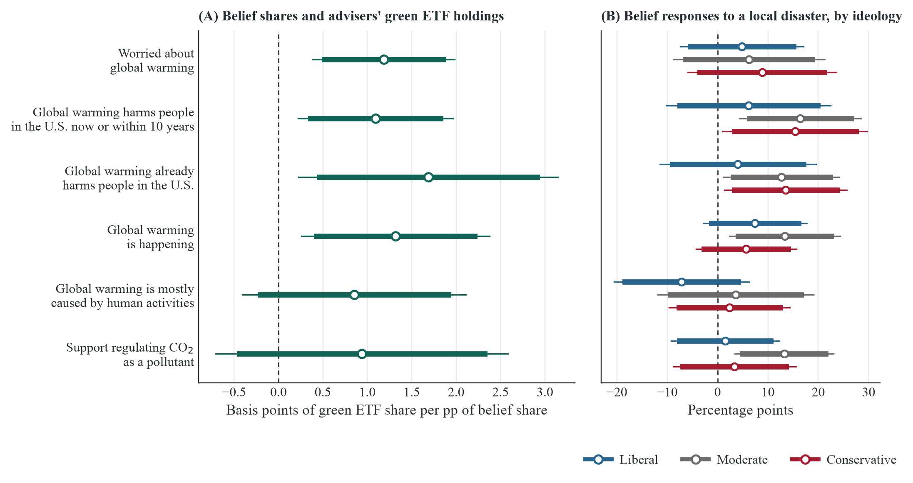
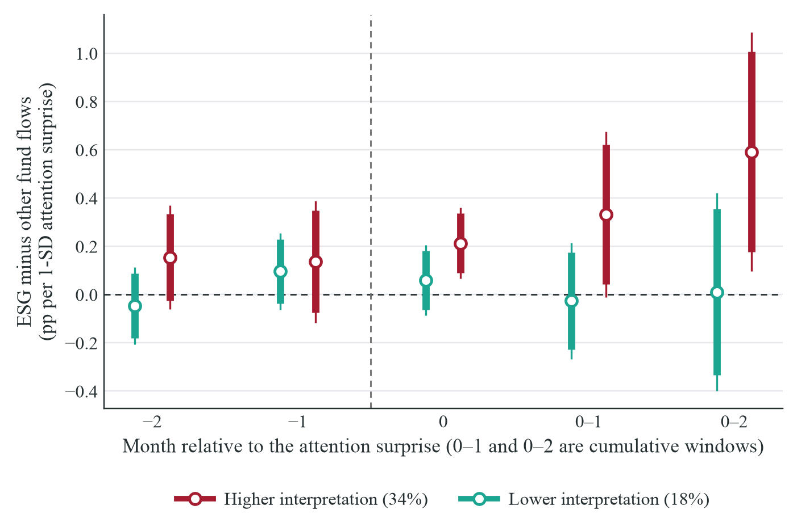
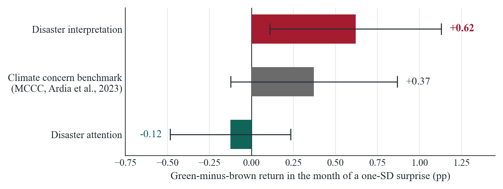

I am a Ph.D. candidate in Economics at Harvard University. My research lies at the intersection of behavioral economics, climate finance, and the economics of information, attention and narratives. I study how investors reason about and interpret events, and how those interpretations shape investment decisions and asset prices.
I am on the 2026–2027 academic job market.
Before Harvard, I earned a B.Sc. and an M.Sc. in Economic and Social Sciences from Bocconi University.
Outside of research, I take contemporary voice lessons and sing, box, and run, and I am always happy to talk about any of the three.
Job Market Paper
What a Disaster Means: Interpretation and the Demand for Green Assets
Abstract
How events are interpreted substantially shapes portfolio choices, fund flows, and asset prices. Focusing on extreme weather events, I analyze 1.5 million articles from U.S. news outlets using fine-tuned large language models to construct a new measure of local climate interpretation that distinguishes general attention to a disaster from coverage explicitly linking it to climate change. I combine this measure with geographically identified portfolios of wealthy U.S. households and mutual fund managers. Among counties affected by these events, local coverage attributing the event to climate change leads to substantial reallocation in household portfolios toward funds labeled as environmentally friendly. Similarly, nearby mutual fund managers actively rebalance toward greener and away from browner stocks. Predetermined county and investor characteristics and the direct economic effects of the disaster are not driving the responses. Using changes in the ownership structure of the county’s newspapers, I provide causal evidence that locally supplied climate interpretation narratives move households’ and fund managers’ portfolios. Nesting these estimates in a calibrated model, I find an interquartile increase in climate interpretation implies a relative appreciation of green stocks equivalent to up to 15% of the observed annual green return spread.
Selected figures


















Interactive map: news → Climate interpretation of local disaster coverage by county and year, 2015–2024, with the floods, hurricanes, wildfires and coastal events that hit each county.
Interactive map: investors and firms → Local advisers’ green ETF holdings and fund managers’ E-pillar tilt by year, listed firms by environmental score or physical climate risk, and the same disaster episodes.
Interactive chart: disaster coverage by category → The composition of local and national disaster coverage by category, 2000–2024, from the article classifier behind the interpretation measure.
Work in Progress
Are You Asking the Right Questions? An Experiment on Investors’ Demand for Information
The Structure of Disagreement: Belief Systems and Cultural Divides in the United States
Teaching
Teaching Fellow, Harvard University
- Capital Markets (undergraduate) · Latest student feedback
- Spring 2026, Daniel Graves
- Spring 2025, Weiling Liu
- Spring 2023, Xavier Gabaix and Matthew Pritsker
- Corporate Finance (undergraduate) · Student feedback
- Fall 2025, Daniel Bergstresser
- Quantitative Methods in Economics (undergraduate) · Student feedback
- Spring 2025, Davide Viviano
- Psychology and Economic Theory (Ph.D.) · Latest student feedback
- Fall 2023, Matthew Rabin
- Fall 2022, Matthew Rabin